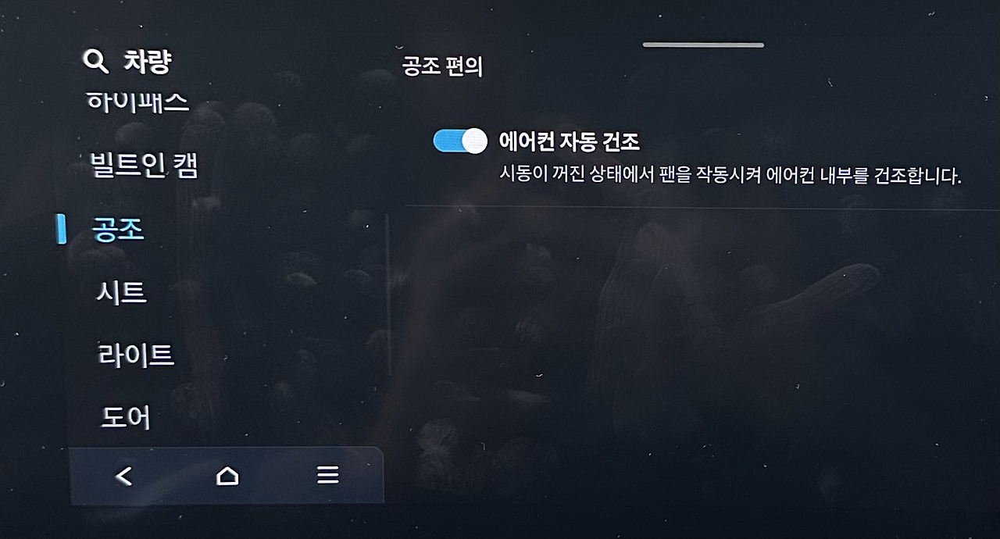
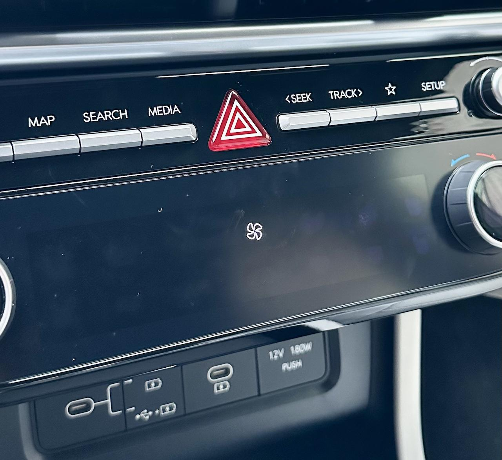

투싼 애프터블로우 사용법 정리
다른 블로그에 투싼의 애프터블로우에 대한 글을 썼던 적이 있었지만 그 내용을 보완할 일이 생겼기에 이 사이트에 다시 기록을 남긴다. 이 글은 투싼에서 애프터블로우 설정 및 동작에 관한 것을 간단하게 기록한다.
참고로 이 글은 2024 투싼하브 페리(NX4 HEV PE) 기준이다.
애프터블로우(after blow)
애프터블로우는 쉽게 말해서 에어컨 자동 건조 기능이다.
에어컨은 동작 원리 상 내부에 습기가 찰 수밖에 없다. 그래서 에어컨 내부는 곰팡이 증식이라는 싸움이 늘 벌어지며 그 결과로 악취라는 무시무시한 패널티를 받을 수 있다. 이 곰팡이와의 전쟁을 애초에 막기 위해 에어컨을 끄기 전에 송풍 모드로 내부를 말리는 방법이 널리 알려져 있다. 하지만 이건 수작업이라 귀찮고 잊어버리기도 쉬운 일이다.
여기서 이 귀찮음을 해결해 주는 것이 애프터블로우, 즉 '에어컨 전원을 끄면 자동으로 송풍 모드로 잠시 전환해 내부를 건조해주는 기능'이다. 이름 그대로 '나중에 바람 불어주기' 기능이다.
요즘 자동차에 에어컨이 없는 경우는 없다고 봐도 되므로 애프터블로우 기능은 최신 차량을 구분하는 하나의 작은 기준이 될지도 모를 중요한 기능인 것 같다. 물론 자동차 뿐만 아니라 가정용 에어컨에도 보편적으로 적용되고 있는 기능이기도 하다.
2024년 기준으로 투싼 하이브리드(NX4 HEV PE)는 전 트림에서 애프터블로우가 기본 제공되며, 투싼 가솔린(NX4 PE)의 경우 프리미엄 트림부터 제공된다. 물론 이 기준은 연식이 바뀌면서 언제든지 바뀔 수 있음에 주의하자. 물론 구성이 퇴보되는 경우는 거의 없으니 하브는 무조건 된다고 보면 될 것 같다.
ccNC에서 애프터블로우 설정하기
ccNC를 통해 아래와 같이 진입해 보면 애프터블로우를 설정할 수 있다.
설정(SETUP) - 차량 - 공조 - 공조 편의
여기서 '에어컨 자동 건조' 설정 스위치를 찾을 수 있다. 개인적으로는 기본 설정은 ON 상태였다.
 투싼 ccNC 설정에서 애프터블로우 항목을 찾을 수 있다.
애프터블로우 동작 환경
기본적으로 애프터블로우는 에어컨을 사용하다 시동을 끄면 그 이후 약 10분 이후에 동작하게 되어있다. 따라서 시동을 끄고 차에서 바로 내린다면 애프터블로우의 동작 모습을 볼 기회는 아마도 없을 것이다.
개인적으로도 차에서 잠에 빠진 아이를 깨우지 않기 위해 시동을 끄고 한참을 기다린 경험이 없었다면 아마도 돌아가는 모습을 볼 일이 없었을 지도 모르겠다.
어쨌든 이런저런 사유로 시동을 끄고 차 안에 있다가 애프터블로우가 돌아가면 아래와 같이 공조기 컨트롤러에 팬 아이콘이 뜨는 모습을 볼 수 있을 것이다.
 애프터블로우가 동작하면 공조기 컨트롤러에 팬 아이콘이 뜬다
이 화면이 갑자기 뜨고 바람이 나오므로 놀라지 말자. 그래도 아이가 깰 정도로 시끄러운 소리는 아니었다.
이 기능 덕분인지 아닌지는 모르겠지만 1년 이상 에어컨 필터를 갈지 않았음에도 아직 별다른 악취는 느껴지질 않는다. 뭐 좋게 생각 해야겠다.